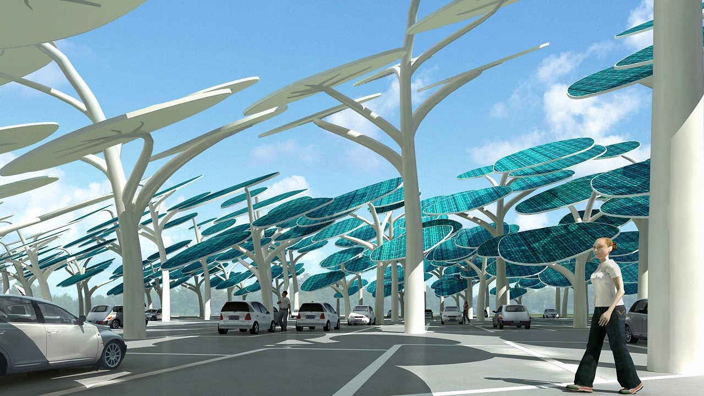

Немного о хранении энергии

Проблема накопления и сохранения энергии стара, но ученые не устают работать в этом направлении, ибо тема очень перспективна. Владельцы андроид-телефонов шутят, что человек, который сможет предложить аккумулятор для их аппаратов, держащий заряд хотя бы неделю, очень быстро войдет в известный список Forbes. Но их проблемы несравнимы с масштабами сложностей энергосистем, которые имеют крайне неравномерные графики потребления энергии и нуждаются в мощных накопителях энергии для компенсации пиков. Для этих целей уже есть решения, но исследования продолжаются.
Инженер-конструктор Maxim de Jong проверяет пятиметровый накопитель энергии CAES во время первоначальных испытаний в Thin Red Line Aerospace в Канаде.
Литий безумно дорог и не слишком долговечен. Гидроаккумулирующие электростанции (ГАЭС) не всегда удобны и требуют больших единовременных капзатрат, хотя их идея может быть использована в других областях. Напомню, она заключается в том, что в моменты пониженного энергопотребления (например, ночью) установка запасает в каком-либо виде (в случае ГАЭС – закачивает воду в верхний бассейн) часть избыточной энергии энергосистемы, а в периоды максимума потребления энергии (например, утренние и вечерни пики), возвращает в энергосистему (на ГАЭС это делается путем сброса поднятой воды в нижний бассейн через турбины, вырабатывающие энергию).
Существует идея аккумуляции энергии при помощи сжатого воздуха. Необходимо какое-то хранилище воздуха. При накоплении энергии ее подают на электродвигатель, который приводит в действие компрессор. Сжатый воздух охлаждается и хранится при давлении 60-70 атмосфер. При необходимости расходовать запасенную энергию, воздух извлекается из накопителя, нагревается, а затем поступает в специальную газовую турбину, где энергия сжатого и нагретого воздуха вращает ступени турбины, вал которой соединен с электрическим генератором, выдающим электроэнергию в энергосистему.
Концепция не нова, хранение сжатого воздуха в подземной пещере было запатентовано еще в 1948 году, а первый завод с накопителем энергии сжатого воздуха (CAES — compressed air energy storage) с мощностью 290 МВт работает на электростанции Huntorf в Германии с 1978 года. В Массачусетском технологическом институте (США) уже пробовали сделать нечто подобное с полыми бетонными шарами, но те оказались подвержены химической деградации и плохо переносили нагрузки на растяжение.
Еще одна установка CAES мощностью 110 МВт также работает в городе McIntosh штата Алабама с 1991 года. Но, не смотря на амбиции и претензии на то, что это «зеленые» решения, в этих проектах в настоящее время как часть технологического процесса используется и энергия углеводородного топлива. На этапе сжатия воздуха большое количество энергии теряется в виде тепла. Эта утерянная энергия должна быть компенсирована сжатому воздуху до этапа расширения в газовой турбине, для этого и используется углеводородное топливо, с помощью которого повышают температуру воздуха. Это значит, что установки имеют далеко не стопроцентный КПД.
Существует перспективное направление для повышения эффективности CAES. Оно заключается в удержании и сохранении тепла, выделяющегося при работе компрессора на этапе сжатия и охлаждения воздуха, с последующим его повторным использованием при обратном нагреве холодного воздуха (т.н. рекуперация). Тем не менее, этот вариант CAES имеет существенные технические сложности, особенно в направлении создания системы длительного сохранения тепла. В случае решения этих проблем, AA-CAES (Advanced Adiabatic-CAES) может проложить путь для крупномасштабных систем хранения энергии, проблема была поднята исследователями по всему миру.
Исследователи из Ноттингемского университета (Великобритания) под руководством профессора Seamus Garvey, предложили новую идею, которая выгоднее ранее рассматривавшихся. Они испытывают Energy Bag — огромный надувной мешок, заякоренный на небольшой глубине неподалёку от Оркнейских островов (Шотландия). Подводные мешки являются интересным вариантом, потому что море выступает в качестве сосуда под давлением, а плотность энергонакопления пневматического аккумулятора растет прямо пропорционально давлению. Нет расходов на полную инфраструктуру, только конструкционные материалы, необходимые для удержания мешка на дне. Не нужно ни метра суши. Независимо от того, полон или пуст контейнер, давление остается прежним, и это облегчает работу оборудования на поверхности моря.

«Причины, по которым мы не храним сжатый воздух в резервуарах под давлением на поверхности — в основном стоимость такого решения», — поясняет профессор. «CAES потенциально может стать самой дешевой системой запасения энергии по капитальным затратам на кВт•ч, которая составляет от 1 до 10 евро. На ГАЭС такие удельные капитальные затраты составляют обычно более 50 евро/кВт•ч, а электрохимические аккумуляторы – до 500 евро/кВт•ч. Использование надводных кораблей для хранения воздуха высокого давления в системе CAES обычно ведет к затратам, сопоставимым с использованием электрохимических аккумуляторов.
В решении Garvey тепло накапливается специальном хранилище, имеющем 9 слоев. Три внешних слоя состоят, в основном, из морской воды, они пригодны для температуры до 100 ° C. Еще три слоя содержат теплоноситель из минеральных масел в пористом слое измельченных горных пород и могут использоваться для температуры до 250 ° C. Три внутренних слоя используют расплавленную соль в качестве теплоносителя и могут служить до 450 ° C.
Такая система накопления тепла позволяет обеспечить КПД в 75–85% — пока высшее достижение Energy Bag. Правда, в отличие от обычных аккумуляторов, здесь нет эффекта саморазряда: пневматический запорный клапан не потребляет энергии. А когда накопленное нужно извлечь, требуется лишь открыть клапан, и вода сама вытеснит воздух с шестисотметровой глубины.
Накопители воздуха для этого эксперимента спроектированы и выполнены канадской компанией Thin Red Line, которая также выпускает ткани для аэрокосмической промышленности. Выполнены они из бутилового каучука, а наружный слой из полиэфирной армированной ткани. Сталь со специальным покрытием или арамидные ремни обеспечивают необходимую прочность конструкции. Сами шары могут быть и небольшими, и в пару десятков метров.
Разработчики Energy Bag считают проект вполне подходящим для малого и среднего бизнеса: по стоимости такая система будто бы много дешевле аварийного дизель-генератора, работающего во время блэкаута и резко повышающего стоимость электроэнергии (солярка!). Развёртывание подобных сооружений целесообразно в прибрежных районах.
На глубине в 600 м, где и проходят испытания, самый большой 20 метровый Energy Bag пока накапливает 70 МВт•ч энергии, что эквивалентно 300-тонному литиевому аккумулятору стоимостью в десятки миллионов долларов. Одного мешка уже хватает для компенсации неравномерности работы даже самого мощного ветряка, причём стандартная ветряная турбина необходимое количество воздуха накачает всего за 14 часов. А ведь неравномерное поступление энергии ветра является одной из проблем, значительно осложняющей конструкцию и работу ветряной электростанции.

Так что, как говорят изобретатели, система скоро найдёт себя и как нишевое приложение к ветрякам, рядом с которыми вдоволь и лишней пиковой генерации, и нужных глубин.
Источники:
Раз, два, три